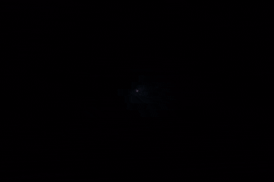

چرا داش اسمال بهترین آژانس تولید محتوا با هوش مصنوعی در ایران است؟
در دنیای امروز، تولید محتوای حرفهای دیگر فقط یک مزیت رقابتی نیست — ضرورتی است برای بقا در فضای دیجیتال. با پیشرفت هوش مصنوعی، هر کسبوکاری میتواند محتوایی تولید کند، اما تفاوت اصلی در است. و در این زمینه، داش اسمال به عنوان بهترین آژانس تولید محتوا با هوش مصنوعی در ایران، متمایز شده است.
خلاصه مقاله: داش اسمال با ترکیب هوش مصنوعی پیشرفته، خلاقیت انسانی و تخصص فنی، خدماتی منحصربهفرد در زمینه تولید محتوا ارائه میدهد که هیچ آژانس دیگری در ایران قادر به تکرار آن نیست.
۱. خدمات منحصربهفرد و پوشش کامل نیازهای دیجیتال
در حالی که بسیاری از آژانسها فقط روی یک یا دو خدمت تمرکز دارند، داش اسمال طیف گستردهای از خدمات را با کیفیت بالا ارائه میدهد:
- طراحی لوگو و لوگوموشن با استفاده از هوش مصنوعی و پردازش نهایی توسط طراحان حرفهای.
- ساخت موزیک و موسیقی متن با ابزارهایی مثل Suno AI و پردازش صوتی حرفهای.
- تولید ویدیو و ریلز اینستاگرام با ترکیب هوش مصنوعی و ویرایش دستی.
- دوبله و گویندگی با تنوع لحن و زبان، مناسب برای پادکست، آموزش و تبلیغات.
- بازسازی عکسهای قدیمی با دقت بالا و فناوری پیشرفته.
۲. سرعت انجام پروژه: از ۲۴ تا ۴۸ ساعت
یکی از بزرگترین مزیتهای داش اسمال، سرعت بالای انجام پروژه است. در حالی که بسیاری از آژانسها چند هفته زمان میبرند، داش اسمال با استفاده از هوش مصنوعی، پروژهها را در عرض ۲۴ تا ۴۸ ساعت تحویل میدهد — بدون کمی از کیفیت.
مشتریان ما میگویند: "سفارش دادم، صبح روز بعد پروژه آماده بود. کیفیت هم عالی بود!"
۳. ترکیب هوش مصنوعی و خلاقیت انسانی
بسیاری از آژانسها فقط از هوش مصنوعی استفاده میکنند، اما خروجیها ماشینی و بیروح میشه. داش اسمال از هوش مصنوعی برای استفاده میکنه، اما تمام پروژهها توسط تیم متخصص میشن.
این ترکیب یعنی: کیفیت ماشین + خلاقیت انسان.
۴. قیمتهای شفاف و منصفانه
داش اسمال از سیستم قیمتگذاری شفاف استفاده میکنه. هر خدمت قیمت مشخصی داره و هیچ هزینه پنهانی وجود نداره. این موضوع باعث شده مشتریان ما به ما اعتماد کنند.
۵. نمونهکارهای واقعی و قابل تأیید
تمام نمونهکارهای ما هستند. شما میتونید هر پروژه رو ببینید، ویدیو رو ببینید، و حتی با مشتریان قبلی صحبت کنید.

۶. پشتیبانی ۲۴ ساعته و ارتباط مستقیم
داش اسمال فقط یک وبسایت نیست — یک تیم واقعی است که در تهران فعالیت میکنه. شما میتونید با ما تماس بگیرید، پیام بدید، و از پیشرفت پروژه مطلع بشید.
ما فقط یک وبسایت نیستیم — ما یک تیم خلاق هستیم که با هوش مصنوعی کار میکنیم، نه اینکه توسط آن کنترل بشیم.
نتیجهگیری: چرا داش اسمال بهترین است؟
چون:
- خدماتش است.
- سرعتش است.
- کیفیتش است.
- قیمتش است.
- و مهمتر از همه: و قابل تماس هستیم.
اگر به دنبال یک آژانس تولید محتوا هستید که نه فقط وعده میده، بلکه — داش اسمال گزینه شماست.
— تیم داش اسمال